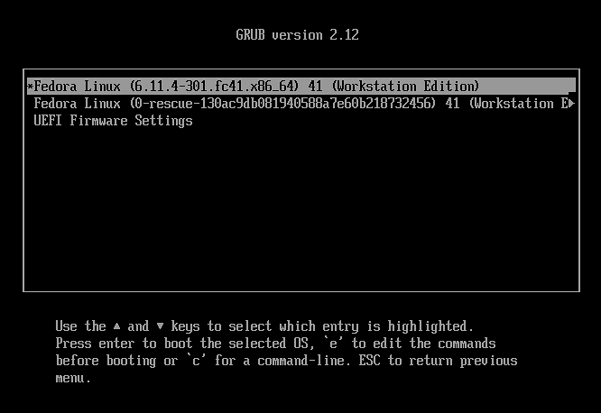
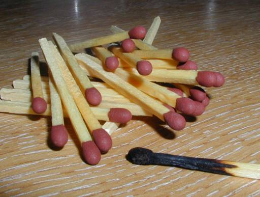
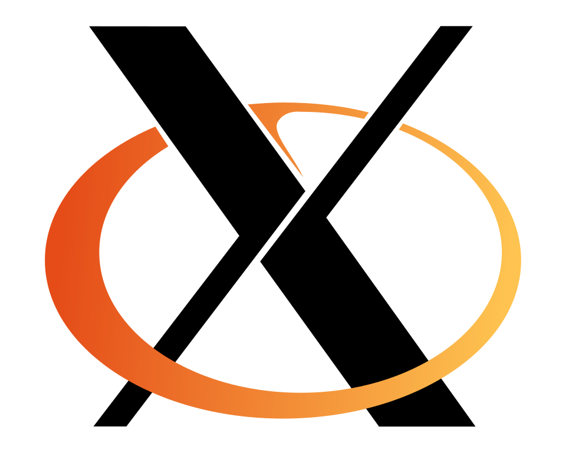
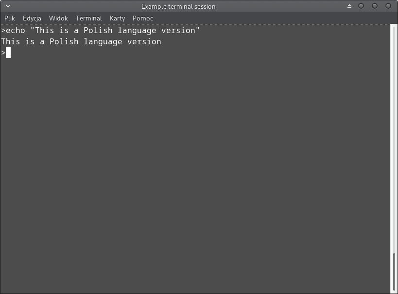

Lesson 10

Bootloader
GRUB starts the machine. This host never shows that screen.
Kernel
The one piece actually called Linux. You already asked it.

Init
The first program. On this machine it is tini, not systemd.
XFCE
Graphical server, desktop, apps. You can see the session file.
Seven pieces. Bootloader is a picture. Ask init and the desktop.

